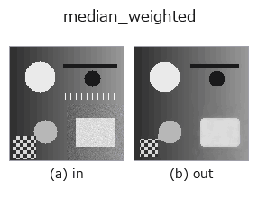

rank op• Data kinds: image → image
• Call: fullseye.apply(img, "median_weighted", a=0.5, b=0.5) (2-D model = एक image + दो scalar knobs a,b∈[0,1])
• HALCON समकक्ष: median_weighted (अर्थ और parameters समझने के लिए HALCON reference उपयोगी है)

*Figure synthetic 128×128 input पर सच में चलाकर मिला output है। बाईं ओर input, दाईं ओर output। Point clouds ऊपर से देखे गए scatter के रूप में (brightness = z), 1-D series line के रूप में, volumes z दिशा में maximum-intensity projection के रूप में, videos बीच के frame के रूप में, complex images amplitude के रूप में, और जो return values चित्र नहीं बन सकते वे स्वयं values के रूप में दिखाए जाते हैं।*
Knob a को बदलकर (0.1 / 0.5 / 0.9, दूसरा knob default पर):
▸ median_weighted: knob a को बदलने का figure (docs site)
*Knob b output नहीं बदलता (मापा गया: 0.1 / 0.5 / 0.9 पर एक जैसा)।*
दूसरी images पर भी (synthetic scene / photo / coins। ऊपर की row में inputs, नीचे की row में उनके outputs। Knobs default पर):
▸ median_weighted: दूसरी images पर output (docs site)
*Colour (H,W,3) input नहीं दिखाया गया: यह op colour channel को तीसरे spatial axis की तरह लेता है (channels को पार करता है)। इसे हर channel के लिए अलग से call करें।*
Median filter। Implementation eliminate_min_max/median_image जैसी ही _sh_rank की median branch है; वृत्ताकार, अष्टकोणीय आदि mask shape के अनुसार weighting नहीं करता और square window का साधारण median लौटाता है। a window के आकार को 3/5/7/9 में बदलता है, b इस्तेमाल नहीं होता।
यह HALCON के median_weighted (circle, rectangle, octagon जैसे कई masks के साथ weighted median filter लगाने वाला operation) की जगह काम करता है, लेकिन implementation बिना weight वाला सामान्य median filter है, और mask के आकार के अंतर को दोबारा नहीं बनाता।
Border handling: किनारे के pixel को दोहराकर mirror होता है (d c b a | a b c d, scipy का default reflect) (मापा गया; tools/impl2/border_probe.py)।
Knobs (मापा गया): a चरणों में असर करता है, और बदलाव a ≈ 0.25、0.49、0.75 पर होता है (मापा गया; 0.02 के step वाले sweep से मापी गई स्थिति)।
• gallery2d_smoothing_rank family guide
• Sample data catalog (DL URL / license) — 2-D के लिए skimage.data (BSD/public) + synthetic, 3-D के लिए real data sources (Stanford/PDS आदि) के DL URL।
• Operators का स्रोत और संदर्भ — इस op family के मूल research/methods के स्रोत।
• Algorithm का मानक स्रोत (लेखक, वर्ष) और उपयोग ऊपर की family usage guide में दिए गए हैं।
नीचे का program सच में चलता है, यह जाँचा गया है (figure वाला ही input)। Studio की help में यह block buttons बन जाता है, जिनसे इसे वहीं load करके चलाया जा सकता है।
median_weighted 0.50 0.50
▸ यह pipeline load करें · Load करके चलाएँ
• gallery2d_smoothing_rank — py -3.11 examples/gallery2d_smoothing_rank.py
image को input के रूप में लेते हैं)identity · gaussian · mean_box · bilateral · unsharp · median · min_filter · max_filter
rank)median · min_filter · max_filter · percentile · sk_median_disk · cv_median · median_image · median_rect
*Provenance: ops.py — 2D operator registry. यह per-op note tools/opdocs.py md से अपने-आप generate होता है (हाथ से edit न करें)।*
© 2026 Kazufumi Furuse — Fullseye operator documentation. Licensed under Apache-2.0.